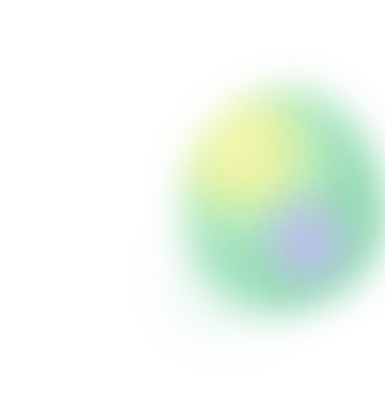

달의 기록 · DESIGN SYSTEM
달의 기록 — 계절 테마 디자인 시스템
라이브 코드(styles/main.css · js/theme.js · js/share.js)의 실제 토큰과 컴포넌트를 그대로 옮긴 페이지입니다.
html.to.design 플러그인으로 이 URL을 불러오면 Figma에서 바로 수정할 수 있는 프레임이 됩니다.
색·타이포·라운딩 값은 모두 CSS 변수 이름과 함께 적어 두었으니, Figma 스타일을 만들 때 그대로 옮겨 쓰면 됩니다.
기준 origin/main · b1fe409/design-system/
테마 light / dark × winter · spring · summer · autumn · none프레임 390×844 (iPhone 14) · iOS 상태바·홈 인디케이터 제외폰트 Pretendard · Gowun Batang
01
Foundations
색은 계절 × 모드 로만 바뀌고, 글자·레이아웃·생리일(주황)·가임기(보라) 표시는 고정입니다.
라이브에서는 html[data-season][data-mode] 속성이 CSS 변수를 갈아끼웁니다.
1.1 컬러 · 코어 (라이트 / 다크) :root · html[data-mode="dark"]
토큰
라이트 (data-mode="light")
다크 (data-mode="dark")
쓰임
표면 테두리 --surf-line
카드 1px 테두리
불투명 표면 --surf-solid
리포트 띠·아이콘 컷
강조 위 텍스트 --on-strong
강조 채움 위 글자
표면(--surf)과 테두리(--surf-line)는 라이트에서 흰색 85% + 흰 1px, 다크에서 흰색 8% + 14%로 뒤집힙니다.
강조 채움(--strong)과 그 위 글자(--on-strong)도 모드에 따라 반대가 됩니다.
1.2 계절 팔레트 · 라이트 html[data-mode="light"][data-season="…"]
토큰
겨울 생리기 1–6일
봄 여포기 7–13일
여름 배란기 14–18일
가을 황체기 19–28일
라이트에서 배경(--bg)은 계절과 무관하게 #F6F3FA 하나입니다. 계절은 네 개의 안개색(--b1~--b4)을
앱 배경 radial-gradient 네 모서리에 깔아 만듭니다. 포인트(--accent)는 브랜드 글자·킥커·강조 라벨에만 씁니다.
1.3 계절 팔레트 · 다크 html[data-mode="dark"][data-season="…"]
토큰
겨울 생리기 1–6일
봄 여포기 7–13일
여름 배란기 14–18일
가을 황체기 19–28일
다크는 배경 자체가 계절마다 달라집니다(겨울 #06081A ~ 여름 #0E0504). 안개는 두 겹만(좌하단 60% · 우하단 18%).
시트·모달은 다크에서도 라이트 팔레트를 유지합니다(라이브 규칙 그대로).
1.4 고정 색 · 계절과 무관 .day-cell · .lg-dot · .w-band · .btn-kakao
생리 표시
#E4796C
--period
달력 범례 · 생리 실제 기록
생리 셀 채움
그라데이션
--period-cell
달력 셀 — 항상 주황 계열
주간 생리 점
#F0A23C
--period-week
홈 주간 스트립 도트
예상 생리
#EFB0B6
--period-predicted
예상 생리 셀 · 범례
배란일
#EFB183
--ovulation
배란일 셀 · 범례 (앰버)
가임기 점
#B9A8EA
--fertile
가임기 셀 아래 도트 (보라)
주간 가임기 점
#9B6BF0
--fertile-week
홈 주간 스트립 도트
진행바 겨울
#C9D8FA
--seg-winter
사이클 진행 라인 세그먼트
진행바 여름
#FFD7B5
--seg-summer
진행바 가을
#E6D2F7
--seg-autumn
몸무게 띠 겨울
#8DA9EC
--weight-winter
주기 탭 몸무게 그래프 배경 띠
몸무게 띠 봄
#7FCFA2
--weight-spring
몸무게 띠 여름
#FF9F7A
--weight-summer
몸무게 띠 가을
#E79AC2
--weight-autumn
경고 텍스트
#A8544E
--warn
삭제·오류 문구
긍정 텍스트
#4E7A5E
--positive
저장 완료 문구
긍정 배지 배경
rgba(150,196,168,.28)
--positive-bg
저장 완료 배지
카카오 브랜드
#FEE500
--kakao
카카오 로그인 버튼
카카오 텍스트
#3C1E1E
--kakao-ink
카카오 버튼 글자·심볼
코랄 (레거시 포인트)
#E98A78
--coral
별점·질문 도트
라벤더 (레거시 포인트)
#A294D8
--lav
시트 행 마크
생리(주황)·배란(앰버)·가임기(보라)는 계절 테마에서도 바뀌지 않습니다.
사용자가 "생리일"로 읽는 색이라 브랜드 톤보다 우선합니다.
1.5 텍스트 오퍼시티 램프 --ink-80 / --ink-66 / --ink-52 / --ink-40 / --ink-30
본문 강조 --ink-80 light rgba(42,37,64,.80) · dark rgba(242,238,246,.80)
보조 본문 --ink-66 light rgba(42,37,64,.66) · dark rgba(242,238,246,.66)
라벨·설명 --ink-52 light rgba(42,37,64,.52) · dark rgba(242,238,246,.52)
캡션·비활성 --ink-40 light rgba(42,37,64,.40) · dark rgba(242,238,246,.40)
빈 값 표시 --ink-30 light rgba(42,37,64,.30) · dark rgba(242,238,246,.30)
본문·라벨은 --t1~--t4 네 단계로만 쓰고, 같은 색을 더 옅게 써야 할 때만 알파 램프를 씁니다.
1.6 앱 배경 · 계절 안개 .app background
blur·backdrop-filter 없이 넓은 radial-gradient 네 겹으로 안개를 만듭니다(iOS Safari 안전 규칙).
Figma에서는 프레임 배경에 같은 radial gradient를 4개 레이어로 얹으면 동일합니다.
1.7 타이포그래피 --serif · --sans
달의 기록 봄 · 여름 12월 14일
Gowun Batang 400 · Google Fonts
제목·계절 히어로·큰 숫자 전용. 굵기는 400 하나만 씁니다. 라이브 로드: fonts.googleapis.com
달의 기록 · 오늘 기록하기 24일째
Pretendard 300 / 400 / 500 / 600 / 700 · jsDelivr
본문·라벨·버튼 기본. 300을 본문 기본으로 쓰고, 600은 CTA·강조 라벨에만.
Light 300 Regular 400 Medium 500 SemiBold 600 Bold 700
봄
히어로 · 계절
Gowun Batang 400 · 64px / 1.05 · -.02em
.h-season
봄
공유뷰 · 계절
Gowun Batang 400 · 52px / 1.1 · 0
.sv-season
달의 기록
스플래시 타이틀
Gowun Batang 400 · 34px / 1.2 · .01em
.splash-title
12월 14일
큰 숫자 · 다음 생리
Gowun Batang 400 · 24px / 1.4 · 0
.h-next-d · .gm-val
사이클 리포트
리포트 제목
Gowun Batang 400 · 20px / 1.3 · -.01em
.report-header-title
기운이 차오르는 때
인사이트 리드
Gowun Batang 400 · 19px / 1.65 · 0
.h-ins-lead
달의 기록
브랜드 · 시트 라벨
Gowun Batang 400 · 17px / 1.3 · 0
.h-brand · .sv-brand
오늘 기록하기
CTA 라벨
Pretendard 600 · 16px / 1.2 · 0
.h-cta-t · .sv-cta-t
카카오로 시작하기
주 버튼 라벨
Pretendard 500 · 15.5px / 1.2 · -.01em
.cta-white · .btn-kakao
기록할수록 나를 더 잘 아는 AI
본문 · 큰 글
Pretendard 400 · 15px / 1.75 · 0
.h-note · .sheet-row-title
이번 사이클은 28일로 일정하게 이어졌어요
리포트 본문
Pretendard 300 · 14px / 1.95 · .005em
.report-ai-text
두통
태그 칩
Pretendard 400 · 13.5px / 1.3 · .01em
.log-tag
초록님의 오늘 · 11월 27일
보조 라벨
Pretendard 400 · 12.5px / 1.65 · .02em
.h-date · .gc-note
기분 · 몸 · 수면 · 메모
작은 라벨
Pretendard 400 · 11.5px / 1.4 · .02em
.sheet-row-sub · .gm-label
MONTHLY CYCLE REPORT
캡션 · 섹션 제목
Pretendard 400 · 11px / 1.4 · .12em
.report-section-title
AI 분석
킥커
Pretendard 400 · 10.5px / 1.4 · .2em
.report-header-label · .gc-kicker
세리프는 7단계, 산세리프는 9단계만 씁니다. 실제 크기·행간·자간을 그대로 적었으니
Figma 텍스트 스타일로 만들면 됩니다. (Pretendard는 Figma 기본 폰트가 아니므로 로컬 설치 후 임포트하면 폰트가 유지됩니다.)
1.9 간격 padding · gap · margin
4 도트 · 세그먼트 간격
6 진행 바 gap · 아이콘 gap
8 칩 간 gap
10 상단 바 패딩
12 카드 내부 소간격
14 칩 세로 패딩 · 요약 간격
16 카드 내부 기본
18 스와치 라운드 여백
20 화면 좌–우 기본
24 섹션 간 (모달)
26 섹션 간 (홈)
28 블록 간 (히어로 아래)
30 바텀시트 상단 라운드 기준
44 터치 타깃 · 아이콘 버튼
기본 격자는 4px. 화면 좌우 20px, 카드 내부 16–20px, 섹션 간 24–28px이 반복됩니다.
1.10 그림자 box-shadow
--surf-shadow 0 10px 30px rgba(130,110,180,.16) 기본 표면(카드·탭바·CTA)
--card-shadow 0 20px 40px -32px rgba(58,50,92,.5) 유리 카드 · 달력 그리드
--report-shadow 0 12px 30px rgba(150,120,200,.2) 리포트 도착 띠
--sheet-shadow 0 -24px 60px -24px rgba(48,44,74,.45) 바텀시트 · 모달
--knob-shadow 0 0 0 4px rgba(143,214,174,.35), 0 4px 10px rgba(40,30,80,.25) 진행 라인 노브(봄)
02
Components
라이브 마크업과 같은 구조로 만든 견본입니다. 폭은 실제 화면 기준(390px 프레임 안 350px)이고,
라벨의 .class 는 라이브 CSS 클래스 이름입니다.
2.1 버튼 .h-cta · .btn-save · .btn-cancel · .btn-kakao · .h-share · .btn-line 모든 버튼은 radius 16px(사각) 또는 999px(필). 높이는 44 / 52 / 56 / 60px의 네 단계만 씁니다. 채움은 기본 CTA가 흰 표면, 주요 액션이 딥 슬레이트(#2A2540) 채움 — 라이트·다크 모두 같은 규칙입니다.
기본 CTA · 홈 .h-cta 흰 필 + 계절 오브 + 딥 슬레이트 화살표. 화면당 1개.
주요 액션 .btn-save 딥 슬레이트 채움 52px · radius 16
보조 액션 .btn-cancel 반투명 흰 표면 + 흰 테두리
카카오 로그인 .btn-kakao #FEE500 · 텍스트 #3C1E1E · 56px 필
공유 .h-share 44px 필 · 업로드 아이콘 + 라벨
라인 · 위험 .btn-line / .btn-line.danger 마이페이지 하단 보조 액션
비활성 .report-save-btn[disabled] 딥 슬레이트 8% 채움 + 40% 글자
2.2 태그 칩 · 배지 .log-tag · .log-tag.selected · .log-tag-chip · .pill-chip · .report-forecast-badge 감정·증상·에너지는 같은 칩을 쓰고, 선택 상태만 딥 슬레이트 채움으로 바뀝니다. 읽기 전용 표시는 더 작은 11px 칩으로 한 단계 낮춥니다.
평온해요 집중이 잘 돼요 예민해요 불안해요 두통 생리통
상태 · 감정 · 증상 (선택 전 / 후) .log-tag / .log-tag.selected 선택 = #2A2540 채움 + 흰 글자
작은 표시 칩 .log-tag-chip 기록 상세·리포트 단계 태그 (11px / 300)
필 칩 · 단계 배지 .pill-chip / .report-forecast-badge 주기 탭 상단 칩 · 예측 배지
2.3 카드 .h-metrics · .report-ai-section · .sv-card · .rs-card · .report-card 카드는 모두 흰 표면(#FFF 계열)에 radius 20–28px, 그림자는 위쪽 1px 하이라이트 + 아래로 긴 소프트 섀도. AI 분석 카드만 계절 그라데이션 1.5px 테두리(봄: #C9B3FF → #F2A9C4 → #FFC9A0)를 씁니다.
28일 평균 주기
4회 기록 횟수
11/16 마지막 기록
홈 상태 카드 .h-metrics / .gm-val 값은 세리프 24px, 라벨은 12px
AI 분석
이번 사이클 요약 이번 사이클은 28일로 일정하게 이어졌어요. 생리 기간은 6일로 평소와 비슷했고, 여포기 후반에 기운이 눈에 띄게 올라왔어요.
리포트 AI 카드 .report-ai-section 본문 14px / 300 / 1.95
이렇게 챙겨주면 좋아요
따뜻하게
핫팩이나 따뜻한 차로 몸을 따뜻하게 해주면 훨씬 편해져요.
조용한 휴식
불을 조금 낮추고 물을 자주 마시면서 조용히 쉬게 해주세요.
케어 힌트 카드 .sv-card / .sv-care-item 공유 받는 사람 화면의 케어 문구
리포트 요약 3카드 .rs-card.c1–c3 살짝 기울고 겹치는 비대칭 스택
리포트 단계 카드 .report-card / .report-phase-row 단계 색 = 몸무게 띠 색과 동일
2.4 하단 탭바 (아이콘형) .tabbar · .tab-btn · .tab-btn.active 글자 없이 아이콘 28px만. 활성 탭만 딥 슬레이트(라이트) / 화이트(다크) 알약으로 채웁니다. 탭 4개: 오늘(달) · 달력 · 주기(막대) · 마이페이지.
탭바 · 라이트 .tabbar (data-mode=light) 358×64 · radius 999 · 하단 10px
탭바 · 다크 .tabbar (data-mode=dark) 8% 화이트 표면 · 활성은 92% 화이트 채움
2.5 바텀 시트 헤더 .sheet · .sheet-grip · .sheet-title · .sheet-sub · .sheet-row 모든 시트·모달이 같은 머리를 씁니다. 위 30px 라운드 + 흰 1px 상단선, 그립 38×4, 제목 17px 중앙 정렬. 시트 배경은 #FCFBFE → #F1EEF6으로 아주 옅게 내려갑니다.
오늘의 상태
가볍게 한 가지만 남겨도 달이 이어서 읽어요
시트 헤더 + 행 .sheet / .sheet-row 390px 기준 · 그립 → 제목 → 부제 → 행
03
Screens
390×844 모바일 프레임 5종. 봄 · 라이트 테마와 28일 주기(오늘 = 11일째가 아닌 12일째 , 여포기) 샘플 데이터로 구성했습니다.
생리 기록 4회(8.24 · 9.21 · 10.19 · 11.16), 평균 28일, 예상 생리는 12월 14일. 리포트·시트는 화면 위로 올라온 상태를 그대로 담았습니다.
하단 탭바는 홈 프레임에만 넣었습니다(나머지는 콘텐츠 확인용).
01 · 홈 (Home) 390×844 · 봄 라이트 · 28일 주기 12일째 (여포기)

초록님의 오늘 · 11월 27일 금요일
봄
다음 생리
12월 14일
17일 남았어요
생리 시작 후 12일째 28일 주기
겨울 봄 여름 가을
28일 평균 주기
4회 기록 횟수
11/16 마지막 기록
02 · 달력 (Calendar) 390×844 · 2026.11 / 12 · 생리 11.16–21 · 예상 12.14–19
달력
28일 주기 · 예상 생리 12월 14일
2026. 11
1
2
3
4
5
6
7
8
9
10
11
12
13
14
15
16
17
18
19
20
21
22
23
24
25
26
27
28
29
30
2026. 12
1
2
3
4
5
6
7
8
9
10
11
12
13
14
15
16
17
18
19
20
21
22
23
24
25
26
27
28
29
30
31
03 · 기록 (Log · 상태 시트) 390×844 · 오늘의 상태 기록 시트 (위에서 68px부터)
04 · 리포트 (Report) 390×844 · 월간 사이클 리포트 (시트 스크롤 · 아래에 에너지 흐름·다음 사이클 예고가 이어짐)
MONTHLY CYCLE REPORT
사이클 리포트
2026.10.19 – 11.15 · 28일 주기
AI 분석
이번 사이클 요약
이번 사이클은 28일로 일정하게 이어졌어요. 여포기 후반에 기운이 올라왔고, 황체기에는 잠들기까지 오래 걸렸어요.
기록이 쌓일수록 달이 더 정확하게 읽어요.
05 · 공유 뷰 (?share=) 390×844 · 받는 사람 화면 · 로그인 없이 열림
달의 기록
지금은 기운이 차오르는 때
에스트로겐이 다시 올라오며 기운과 기분이 함께 살아나는 시기예요. 새로운 걸 시작하기 좋은 때예요.
이렇게 챙겨주면 좋아요
따뜻하게
핫팩이나 따뜻한 차로 몸을 따뜻하게 해주면 훨씬 편해져요.
조용한 휴식
불을 조금 낮추고 물을 자주 마시면서 조용히 쉬게 해주세요.
＋
html.to.design 으로 가져오는 법
이 페이지는 Figma 변환에 깨지기 쉬운 CSS(backdrop-filter · filter: blur · mix-blend-mode)를 쓰지 않았습니다.
그라데이션은 Figma 그라데이션 레이어로, 그림자는 이펙트로 그대로 넘어갑니다.
01
URL로 임포트
Figma → 플러그인 html.to.design → 웹사이트 URL에 이 페이지 주소를 넣습니다.
프레임 폭은 2,240px(페이지 전체)로 지정하면 03의 5개 화면이 잘리지 않습니다.
02
폰트 먼저 설치
Pretendard는 Figma 기본 폰트가 아닙니다. 로컬에 설치한 뒤 임포트하면 글자가 유지되고,
없으면 시스템 폰트로 대체됩니다. Gowun Batang은 Google Fonts에 있습니다.
03
스타일로 저장
01의 스와치·타이포 표를 Figma 색상/텍스트 스타일로 저장하고, 02 견본을 컴포넌트로 만들면
03 화면을 고칠 때 같은 값을 재사용할 수 있습니다. tokens.json도 같은 값입니다.